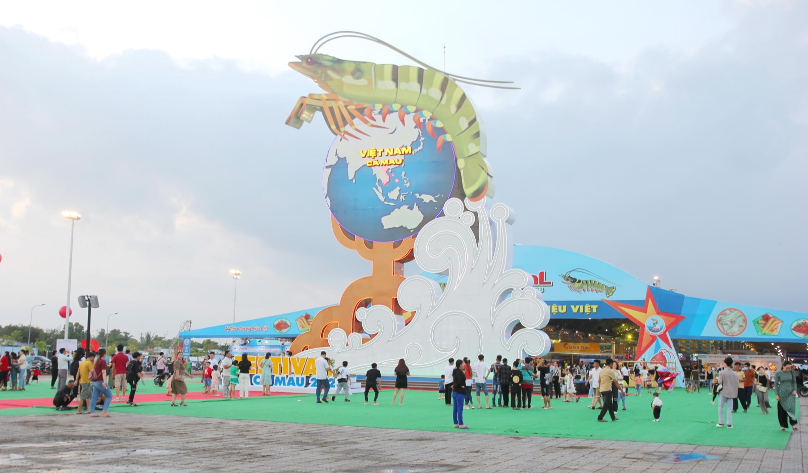

Nguồn báo : Pháp luật Việt Nam — Cơ quan của Bộ Tư pháp
Cà Mau sẵn sàng cho Festival Tôm 2026: Đưa thương hiệu tôm Việt vươn tầm thế giới
Với chủ đề “Tôm Cà Mau - Vươn tầm thế giới”, Festival Tôm Cà Mau lần thứ II năm 2026 sẽ diễn ra từ ngày 21 đến 23/11. Đây không chỉ là sự kiện xúc tiến đầu tư, thương mại quy mô lớn của ngành tôm Việt Nam, Festival còn là diễn đàn kết nối doanh nghiệp, nhà khoa học, nhà đầu tư và người nuôi tôm, góp phần quảng bá thương hiệu tôm Cà Mau, mở rộng thị trường và thúc đẩy ngành hàng phát triển theo hướng xanh, bền vững và hội nhập quốc tế.